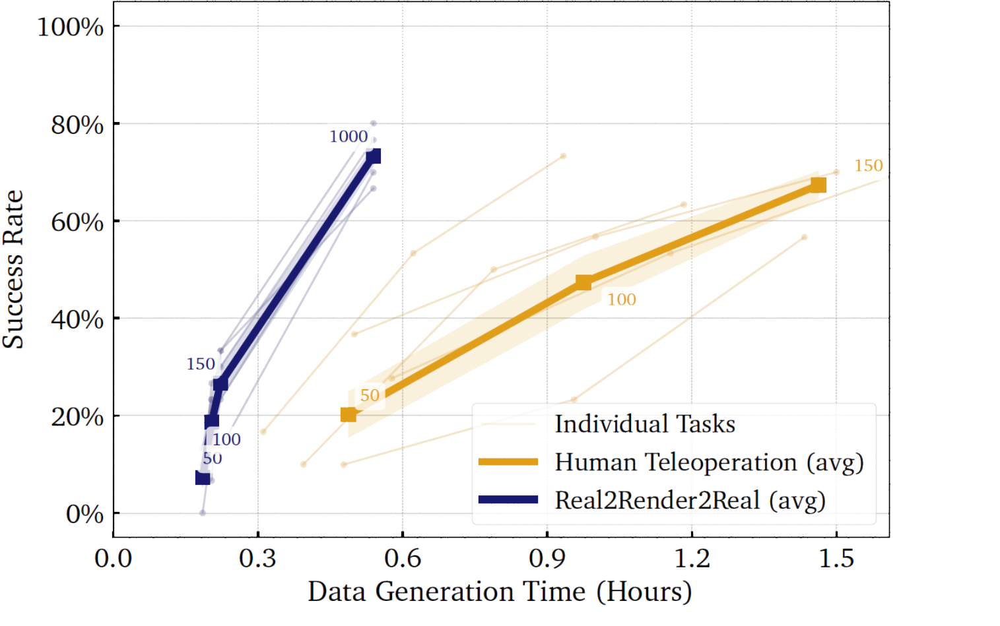

UC Berkeley, Toyota Research Institute* Equal contribution
Real2Render2Real (R2R2R) is a scalable pipeline for generating data to train generalist manipulation policies - without dynamics simulation or teleoperation.
We train modern RGB + Proprioception based imitation learning frameworks and VLA models (Vanilla Diffusion Policy, π0-FAST); without requiring any teleoperation data!
Abstract ▾(click to expand)
Scaling robot learning requires vast and diverse datasets. Yet
the prevailing data collection paradigm—human teleoperation—remains costly
and constrained by manual effort and physical robot access. We introduce
Real2Render2Real (R2R2R), a scalable pipeline for generating robot training
data without physics simulation or teleoperation. Using a smartphone-captured
scan of one or more objects and a single monocular human demonstration, R2R2R
reconstructs detailed 3D object geometry and appearance, tracks 6-DoF object motion, and synthesizes thousands of physically plausible, robot-agnostic demonstrations through parallel-environment photorealistic rendering and inverse kinematics.
Data generated by R2R2R integrates directly with models that operate on
robot proprioceptive states and image observations, such as vision-language-action
models (VLA) and imitation learning policies. Physical experiments suggest that
models trained on R2R2R data alone can achieve comparable performance to those
trained on teleoperated demonstrations, with model performance scaling with the
amount and diversity of R2R2R data, while requiring 1/27 of the time to generate.
By decoupling data generation from physical robot constraints, R2R2R enables the
computational scaling of robot datasets to support increasingly capable generalist
policies.
Real Robot Rollouts
←
→
Click a thumbnail to change the video above.
We train and evaluate two modern robot visuomotor policies (π0-FAST and Diffusion Policy) on either only rendered data generated by Real2Render2Real or only human teleoperated data across 5 manipulation tasks.
Performance Scaling

Comparative analysis of imitation-learning policies trained on R2R2R-generated data against human teleoperation data across 1050 physical robot experiments and 5 robotic tasks suggest that while real data is higher quality and
more efficient per demonstration, R2R2R’s generation enables scaling trajectory diversity far beyond
human throughput, achieving competitive final performance with less collection effort.
Scan, Track, Render
Click and move me!
←
→
Click a thumbnail to change the interactive view above.
The distinction we make between simulation and rendering is often a point of confusion:
When we refer to simulation, we mean the use of a physics engine to computationally model
dynamic interactions. In contrast, rendering refers to generating visual data from a graphics
engine.
Why No Dynamics Simulation? ▾(click to expand)
In early experiments, we explored physics engines for real-to-sim-to-real data generation but found that with imperfect or unrefined real-to-sim assets, simulated dynamics often diverged from real-world behavior—especially in gripper-object interactions, where issues like interpenetration and unrealistic collisions were common. Still, we wanted to pursue scalable, high-quality data generation through computation. To that end, we use IsaacLab while disregarding its collision computation features, relying on it solely for photorealistic rendering. Object motion is grounded by distilling object-centric dynamics from real-world demonstration videos and object visual appearance is distilled from high-fidelity 3D reconstructions.
This paper is not a critique of physics engines or their role in robot manipulation, but rather a positive result: computational data generation can scale effectively even without yet simulating dynamics!
Rendering More Embodiments
Part trajectories from a single demonstration can be retargeted across different robot embodiments.
Domain Randomization
We randomize initial object poses, lighting, and camera poses to generate diverse synthetic rollouts for each object-task combination.
Trajectory Interpolation
From a single demonstration, R2R2R generates a distribution of plausible trajectories by interpolating 6-DoF part motion.
Click and move me!
Full Project Video
BibTeX
@misc{yu2025real2render2realscalingrobotdata,
title={Real2Render2Real: Scaling Robot Data Without Dynamics Simulation or Robot Hardware},
author={Justin Yu and Letian Fu and Huang Huang and Karim El-Refai and Rares Andrei Ambrus and Richard Cheng and Muhammad Zubair Irshad and Ken Goldberg},
year={2025},
eprint={2505.09601},
archivePrefix={arXiv},
primaryClass={cs.RO},
url={https://arxiv.org/abs/2505.09601},
}